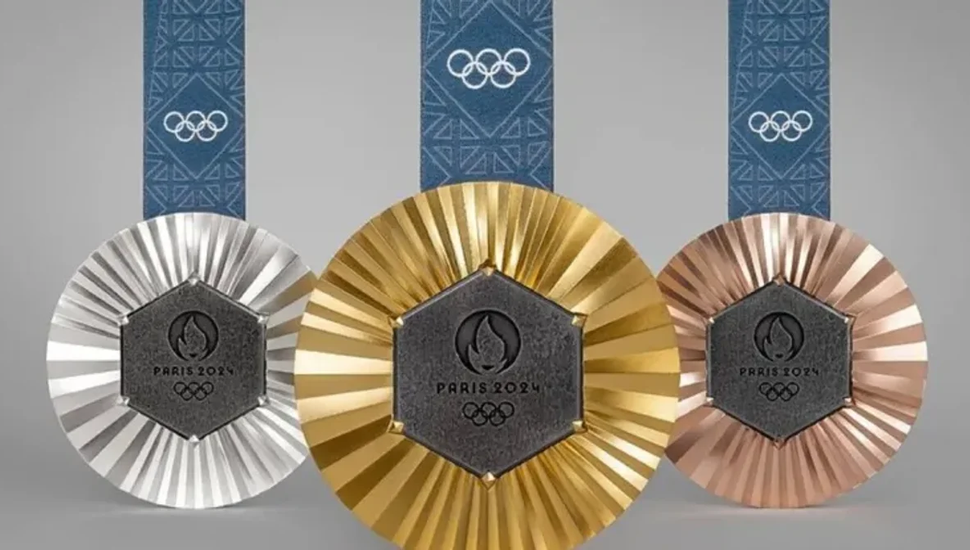
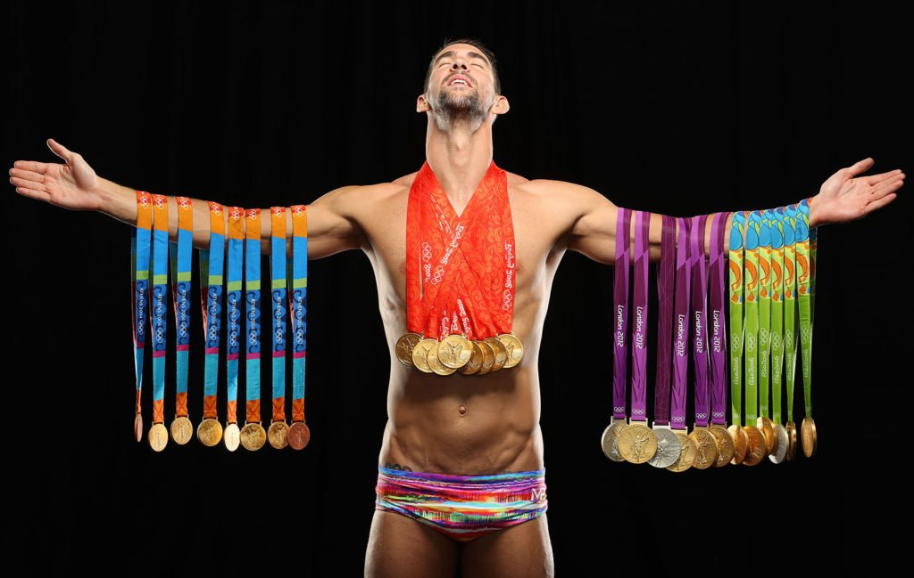

Gimnasia
JUEGOS OLÍMPICOS DE LA ANTIGÜEDAD
Estos juegos se celebraron por primera vez en el año 776 a.C. en Olimpia, una ciudad sagrada en la región de Élide, en el noroeste del Peloponeso. Su celebración se mantuvo durante casi 12 siglos, hasta que fueron prohibidos por el emperador romano Teodosio I en el año 393 d.C., como parte de su esfuerzo por erradicar las prácticas paganas en el Imperio.

Medallas Por Deporte
En atletismo, Estados Unidos se destaca en las pruebas de pista y campo, mientras que Jamaica es famosa por su velocidad en las carreras de 100 y 200 metros. En natación, figuras como Michael Phelps han llevado a Estados Unidos a la cima, mientras que Australia también ha tenido un desempeño notable. La gimnasia ha sido tradicionalmente dominada por Estados Unidos, Rusia y China, mientras que el levantamiento de pesas ha visto un predominio soviético y chino.

Atletas con Más Medallas Olímpicas
Michael Phelps, con 28 medallas, es el atleta más condecorado en la historia de los Juegos Olímpicos. Larisa Latynina, Paavo Nurmi, Bjørn Dæhlie y otros han dejado su huella en la historia olímpica, cada uno destacando en sus respectivas disciplinas y contribuyendo al legado del deporte.

Noticias destacadas
Las Olimpiadas de París 2024 se celebrarán del 26 de julio al 11 de agosto, con una gran participación de atletas de todo el mundo. Se espera que se introduzcan nuevos deportes, como el breakdance, y que se implementen medidas sostenibles en las instalaciones.